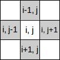
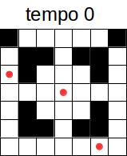
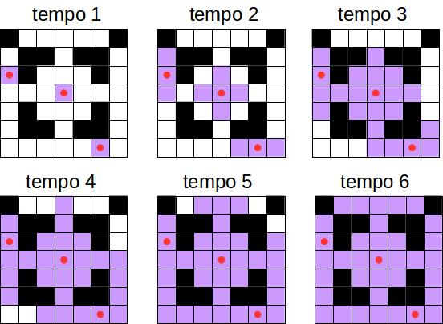

A Federação Comercial, aliada ao Lorde Sith Darth Sidious, tem bloqueado as remessas para o planeta Naboo, governado pela jovem Rainha Amidala, depois de se estabelecer novos e elevados impostos sobre as rotas de comércio na galáxia. O Chanceler da República Galáctica, Valorum, enviou dois embaixadores Jedis para o centro da Federação, onde o vice-rei Nute Gunray os esperava. Assim que a nave atracou, Gunray foi informado que os embaixadores eram Cavaleiros Jedis, chamados Qui-Gon Jinn e Obi-Wan Kenobi, seu Padawan. Preocupado, Gunray contatou Darth Sidious e recebeu a ordem de eliminar os Jedis.
Gunray decidiu atacar o recinto onde estão Qui-Gon e Obi-Wan com gás tóxico e, por isso, precisa saber o tempo necessário para que todo o recinto seja contaminado com o gás, para saber quando entrar no recinto e retirar os corpos sem vida dos Jedis. Este recinto pode ser representado com uma matriz, onde cada posição representa uma parede ou um espaço vazio. O gás tóxico é espalhado por aspersores, a partir de vários lugares do recinto. Ele pode se espalhar apenas por espaços vazios, seguindo as seguintes regras:

Por exemplo, se o recinto onde estão Qui-Gon e Obi-Wan é dado pela seguinte matriz:

... onde as paredes são representadas por células pretas, os espaços vazios por células brancas e as posições dos aspersores indicadas pelos pontos vermelhos. O processo de espalhamento do gás tóxico ao longo do tempo é mostrado na seguinte figura:

As células púrpuras representam as posições contaminadas do recinto no tempo indicado acima de cada figura. Então, o tempo necessário para que o gás tóxico contaminar todos os espaços vazios do recinto é 6. A tarefa deste laboratório é desenvolver um programa que, dada a representação matricial do recinto, com as posições dos aspersores de gás tóxico, determinar o tempo necessário para que todos os espaços vazios do recinto sejam contaminados.
| # | Entrada | Saída |
| 1 |
7 7 1 0 0 0 0 0 1 0 1 1 0 1 1 0 2 1 0 0 0 1 0 0 0 0 2 0 0 0 0 1 0 0 0 1 0 0 1 1 0 1 1 0 0 0 0 0 0 2 0 | Tempo = 6 |
| 2 |
13 15 1 1 0 0 0 0 0 0 0 0 0 0 0 1 1 1 1 0 1 1 0 0 0 0 0 1 1 0 1 1 1 1 0 1 1 0 0 0 0 0 1 1 0 1 1 1 1 0 0 0 0 1 0 1 0 0 0 0 1 1 1 1 0 0 0 1 1 0 1 1 0 0 0 1 1 1 1 0 0 1 1 0 0 0 1 1 0 0 1 1 1 1 0 1 1 0 0 2 0 0 1 1 0 1 1 1 1 0 0 1 1 0 0 0 1 1 0 0 1 1 1 1 0 0 0 1 1 0 1 1 0 0 0 1 1 1 1 0 0 0 0 1 1 1 0 0 0 0 1 1 1 1 0 1 1 0 0 1 0 0 1 1 0 1 1 1 1 0 1 1 0 0 0 0 0 1 1 0 1 1 1 1 0 0 0 0 0 0 0 0 0 0 0 1 1 | Tempo = 25 |
| 3 |
14 15 0 0 0 0 0 0 0 2 0 0 0 0 0 0 0 0 0 0 0 0 1 1 1 1 1 0 0 0 0 0 0 0 0 1 1 0 0 0 0 0 1 1 0 0 0 0 0 1 0 0 0 0 0 0 0 0 0 1 0 0 0 1 0 0 0 0 0 0 0 0 0 0 0 1 0 0 1 0 0 0 0 1 1 1 0 0 0 0 1 0 0 0 0 2 0 0 1 1 1 0 0 2 0 0 0 0 1 0 0 0 0 1 1 1 0 0 0 0 1 0 0 1 0 0 0 0 0 0 0 0 0 0 0 1 0 0 0 1 0 0 0 0 0 0 0 0 0 1 0 0 0 0 0 1 1 0 0 0 0 0 1 1 0 0 0 0 0 0 0 0 1 1 1 1 1 0 0 0 0 0 0 0 0 0 0 0 0 0 0 0 0 0 0 0 0 0 0 0 0 0 0 0 2 0 0 0 0 0 0 0 | Tempo = 9 |
| 4 |
17 18 1 1 1 1 1 1 1 1 1 1 1 1 1 1 1 1 1 1 1 0 0 0 0 0 0 0 2 0 0 0 0 0 0 0 0 1 1 0 0 1 1 1 1 1 0 0 1 1 1 1 1 0 0 1 1 0 0 1 0 0 0 1 0 0 1 0 0 0 1 0 0 1 1 0 0 1 0 0 0 1 0 0 1 0 0 0 1 0 0 1 1 0 0 1 0 0 0 1 0 0 1 0 0 0 1 0 0 1 1 0 0 1 1 0 1 1 0 0 1 1 0 1 1 0 0 1 1 0 0 0 0 0 0 0 0 0 0 0 0 0 0 0 0 1 1 0 0 2 0 0 0 0 0 2 0 0 0 0 0 2 0 1 1 0 0 0 0 0 0 0 0 0 0 0 0 0 0 0 0 1 1 0 0 1 1 0 1 1 0 0 1 1 0 1 1 0 0 1 1 0 0 1 0 0 0 1 0 0 1 0 0 0 1 0 0 1 1 0 0 1 0 0 0 1 0 0 1 0 0 0 1 0 0 1 1 0 0 1 0 0 0 1 0 0 1 0 0 0 1 0 0 1 1 0 0 1 1 1 1 1 0 0 1 1 1 1 1 0 0 1 1 2 0 0 0 0 0 0 0 0 0 0 0 0 0 0 2 1 1 1 1 1 1 1 1 1 1 1 1 1 1 1 1 1 1 1 | Tempo = 10 |
| 5 |
6 6 1 1 1 1 1 1 1 1 0 0 1 0 0 1 1 0 0 1 0 0 1 1 0 2 1 0 0 1 1 0 0 1 0 0 1 1 1 1 1 1 1 1 | Perigo: Jedis podem estar vivos |